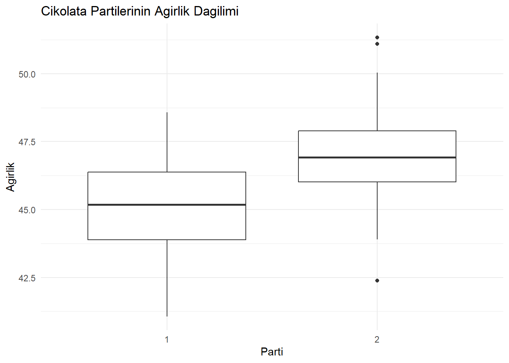

Güven aralıkları ve hipotez testleri, çıkarımsal istatistikte karar verme süreçlerinin temel araçlarıdır. Güven aralıkları, bir anakütle parametresi için tahmin edilen aralığı sunarak belirsizliği açıkça ifade eder ve tahminin ne kadar güvenilir olduğunu gösterir. Hipotez testleri ise belirli bir iddianın (örneğin, bir ortalamanın veya farkın anlamlılığı) istatistiksel olarak desteklenip desteklenmediğini değerlendirir. Her iki yöntem de, sınırlı örneklem verilerinden anakütle hakkında genelleme yapmaya olanak tanır ve araştırmacıların veriye dayalı, anlamlı ve doğru sonuçlar çıkarmasına yardımcı olur. Bu araçlar olmadan, çıkarımsal analizlerin güvenilirliği ve bilimselliği büyük ölçüde azalır.
Örnek veri seti: Çikolata Barları
Ankara merkezli bir çikolata üreticisi olan Ankara Çikolatacısı, çikolata barlarının ağırlığını (gram cinsinden) ölçmüş ve üretim sürecindeki değişkenliği anlamamızı istemiştir. Bu verileri Normal dağılımdan simüle edeceğiz. Ortalama (\(\mu = 40\)) ve satandart sapma (\(\sigma = 2\)). Çikolata bar ağırlıklarının gerçek ortalamasını ve varyansını biliyoruz, ancak ilerleyen bölümlerde (örn. t-testi yaparken) bu parametrelerin bilinmediğini varsayabiliriz.
Veri Simülasyonu ve İnceleme
# Rastgelelik için sabit bir başlangıç noktası belirlemeset.seed(1)# Normal dağılımdan rastgele veri üretmechoc.ankara<-rnorm(10000, # Üretilecek rastgele sayıların toplam miktarı mean =40, # Normal dağılımın ortalama değeri sd =2# Normal dağılımın standart sapması)# İlk birkaç veriyi görüntülemehead(choc.ankara)
Güven aralığı, istatistikte bir anakütle parametresi için bir aralık kestirimi olup, çıkarımsal istatistikte önemli bir araçtır. Tek bir noktadan tahmin yerine, parametrenin belirli bir olasılıkla içinde bulunabileceği alt ve üst sınırlarla tanımlanan bir aralık sunar. Güven aralıkları, tahminin ne kadar güvenilir olduğunu ifade eder ve bu güvenilirlik, seçilen güven düzeyiyle (%90, %95 veya %99 gibi) belirtilir. Yüksek bir güven düzeyi seçildiğinde güven aralığı genişler, bu da parametreyi kapsama olasılığını artırır. Güven aralıkları genellikle, tahmin yönteminin normal dağılım gibi belirli varsayımları karşılaması durumunda hesaplanır. Çıkarımsal istatistikte, anakütle parametreleri hakkında daha anlamlı ve güvenilir sonuçlara ulaşmayı sağlar ve hipotez testleriyle birlikte kullanıldığında analizlerin istatistiksel gücünü artırır.
Güven Aralıklarının Hesaplanması
R’de güven aralıklarını hesaplamak oldukça basittir. Temel R paketinde doğrudan güven aralığı hesaplayan bir fonksiyon bulunmasa da, z.test() ve t.test() fonksiyonlarını kullanarak ortalamalar için güven aralıklarını hesaplayabiliriz (bu yöntemler oranlar için kullanılamaz).
4.1.1 Popülasyon Standart Sapmasını Biliniyorsa: z.test() Fonksiyonu
Eğer popülasyon standart sapmasını biliyorsak, z.test() fonksiyonunu (BSDA paketinden) kullanabiliriz. Bu fonksiyona popülasyon standart sapmasını (sigma.x) ve güven düzeyini (conf.level) sağlamamız gerekir. Örnek bir kullanım aşağıda verilmiştir:
# Gerekli paketin yüklenmesi# install.packages("BSDA") library("BSDA")# z.test fonksiyonu ile güven aralığı hesaplamaz_test1<-z.test(choc.ankara, # Analiz edilecek veri seti sigma.x =2, # Popülasyonun bilinen standart sapması conf.level =0.95# Güven düzeyi (%95))# Güven aralığını döndürmez_test1$conf.int
# Hesaplanan güven aralığını döndürür. Bu, belirlenen %95 güven düzeyi ile # çikolata barlarının ağırlık ortalaması için tahmin edilen aralıktır.
Bu sonuç, çikolata barlarının ağırlık ortalamasının %95 güven düzeyiyle 39.94773 gram ile 40.02613 gram arasında olduğunu göstermektedir. Başka bir deyişle, elimizdeki verilere dayanarak, gerçek ortalama ağırlığın bu aralıkta yer alması oldukça olasıdır. Ancak, bu güven aralığı %100 kesinlik sunmaz; %5’lik bir hata payı mevcuttur.
Güven düzeyi %95 olarak belirlenmiştir. Bu da, benzer şekilde birçok örneklem üzerinden analiz yapılsa, bu örneklemlerin %95’inin gerçek ortalamayı belirtilen aralıkta içerme olasılığını ifade eder. Dolayısıyla, çikolata barlarının üretim sürecinin genel olarak tutarlı ve standartlara uygun olduğunu söyleyebiliriz. Üretimdeki varyasyonun düşük olması, kalite kontrol süreçlerinin etkili bir şekilde işlediğini göstermektedir.
Neden “%95” Güven Aralığı
Güven aralıklarını hesaplarken %95 güven düzeyinin önemi, istatistikte bir denge noktası olarak kabul edilmesinden kaynaklanır. %95 güven düzeyi, bir tahminin güvenilirliğini makul bir kesinlik düzeyinde ifade ederken, aynı zamanda hata payını (%5) da kontrol edilebilir seviyede tutar. Bunun birkaç temel nedeni vardır:
Pratik Denge: %95 güven düzeyi, güvenilirlik ve belirsizlik arasında dengeli bir nokta sağlar. Daha yüksek bir güven düzeyi (%99) aralığı genişletir, bu da sonuçları daha az hassas hale getirebilir. Daha düşük bir güven düzeyi (%90) ise daha dar aralık sağlar ancak güvenilirlik azalır. %95, bu ikisi arasında ideal bir denge olarak kabul edilir.
Geleneksel Kabul: İstatistiksel analizde %95 güven düzeyi, literatürde ve uygulamada yaygın olarak kabul edilmiş bir standarttır. Bu standartlaşma, farklı çalışmalar arasında karşılaştırma yapmayı kolaylaştırır.
Hata Payı (%5): %95 güven düzeyi, tahmin edilen aralığın gerçek parametreyi kapsama olasılığının %95 olduğunu, yani yalnızca %5 hata payı olduğunu ifade eder. Bu hata payı, birçok durumda bilimsel kabul için yeterince düşük bulunur.
Normatif Kullanım: Pek çok disiplin ve uygulamada (örneğin, biyoloji, sosyal bilimler, ekonomi) %95 güven düzeyi yaygın olarak kullanılır ve bu düzeyin ötesinde bir anlam çıkarma genellikle “istatistiksel olarak anlamlı” kabul edilir.
Z Değeri: %95 güven düzeyi, standart normal dağılımda \(z = \pm 1.96\) sınırına karşılık gelir. Bu, istatistiksel analizlerde kolaylıkla hesaplanabilen ve yorumlanabilen bir değerdir.
Sonuç olarak, %95 güven aralığı, tek bir tahminin doğruluğunu ifade etmez. Bunun yerine, birçok örneklem alınarak yapılan hesaplamalarda, bu aralıkların çoğunluğunun (%95) gerçek değeri kapsayacağını garanti eder.
4.1.2 Popülasyon Standart Sapmasını Bilinmiyorsa: t.test() Fonksiyonu
Pratikte çoğu zaman popülasyon standart sapmasını bilmediğimiz durumlarla karşılaşırız. Bu durumda t.test() fonksiyonunu kullanabiliriz. Burada yalnızca güven düzeyini (conf.level) belirteriz ve fonksiyon, standart hatayı kullanarak güven aralığını oluşturur.
# T-testi ile güven aralığı hesaplamat_test1<-t.test(choc.ankara, # Analiz edilecek veri seti conf.level =0.95# Güven düzeyi (%95))# Hesaplanan güven aralığını döndürmet_test1$conf.int
Hipotez testleri, istatistiksel analizlerde belirli bir iddianın doğruluğunu değerlendirmek için kullanılan yöntemlerdir. Hipotez testi, bir null hipoteze (yokluk hipotezi) karşı kanıtların gücünü değerlendirmek için kullanılan bir istatistiksel yöntemdir. Null hipotez, popülasyonda herhangi bir fark, ilişki veya etkinin olmadığını varsayar. Bu yöntem, null hipotezin doğru olduğunu kabul ederek, örneklem verilerinde gözlemlenen veya daha uç sonuçların olasılığını hesaplar. Bu olasılık, p-değeri ile ifade edilir.
Eğer p-değeri yeterince küçükse (örneğin, genellikle \(p<0.05\)), null hipotez reddedilir ve alternatif hipotezin doğru olabileceği sonucuna varılır. Ancak, null hipotez asla “kabul edilmez” veya “kanıtlanmaz.” Sadece mevcut verilerle reddedilemeyecek kadar güçlü olduğu düşünülür.
Bu süreç, bir ceza davasına benzetilebilir: Sanık suçsuz kabul edilir (null hipotez reddedilmez) ancak suçluluğu yeterince güçlü kanıtlarla gösterildiğinde (istatistiksel olarak anlamlı sonuçlar) sanık suçlu ilan edilir (null hipotez reddedilir).
Bu yöntemlerde iki ana hipotez tanımlanır:
Null hipotez (\(H_0\)): Varsayılan durum ya da iddia (örneğin, iki grup arasında fark yoktur).
Alternatif hipotez (\(H_1\)): Test edilmek istenen yeni iddia (örneğin, iki grup arasında fark vardır).
Veriler toplandıktan sonra, bu hipotezler istatistiksel araçlarla değerlendirilir. Hipotez testinin sonucunda elde edilen p-değeri, \(H_0\)’ın doğru olduğu varsayımı altında gözlemlenen sonuçların olasılığını ifade eder. Eğer p-değeri, önceden belirlenmiş anlamlılık düzeyinden (örneğin, \(\alpha\) = 0.05) küçükse, null hipotez reddedilir ve alternatif hipotezin doğru olabileceği kabul edilir.
Adım 1. Araştırma Sorusu Belirlenir
Bir palet çikolata barımız olduğunu ve bunların Ankara Çikolatacısı’na ait olup olmadığından emin olmadığımızı varsayalım. Bu çikolata barlarının ağırlıkları, bu barların Ankara Çikolatacısı’na ait olma olasılığı hakkında bize ne söyleyebilir?
# Rastgelelik için sabit bir başlangıç noktası belirlemeset.seed(20)# Normal dağılımdan rastgele veri üretmechoc.palet<-rnorm(20, # Üretilecek rastgele sayıların toplam miktarı mean =42, # Normal dağılımın ortalama değeri sd =2# Normal dağılımın standart sapması)# Veri özet istatistiklerini görüntülemesummary(choc.palet)
Min. 1st Qu. Median Mean 3rd Qu. Max.
36.22 40.81 41.41 41.62 42.87 45.57
Araştırma sorusu: “Bu çikolata barlarının ağırlıkları, onların Ankara Çikolatacısı’na ait olduğunu gösteriyor mu?”
Adım 2. Null Hipotezi (\(H_0\)), ve Alternatif Hipotez (\(H_1\)) Belirlenir
Araştırma sorusuna dayanarak, null ve alternatif hipotezler oluşturulur. Örneğin, Adım 1’deki araştırma sorusunu cevaplamak için, iki grup arasında bir karşılaştırma yapmamız gerekir: Ankara Çikolataları’ndan olduğu varsayılan çikolata barlarının ağırlıkları ve diğer çikolata barlarının ağırlıkları. Bu durumda, her iki grubun popülasyon ortalamalarını sırasıyla \(\mu_1\) ve \(\mu_2\) olarak ifade edilir.
Yunan Alfabesi ve istatistik Sembolleri
Yunan alfabesindeki \(\mu\) (mu) harfi istatistikte popülasyon ortalamasını bembolize etmektedir. Buna benzer olarak, \(\sigma\) (sigma), \(\alpha\) (alfa) gibi semboller de kullanılmaktadır. Sembollerle alakalı daha fazla bilgi edinmek için: https://mathvault.ca/hub/higher-math/math-symbols/probability-statistics-symbols/
Null hipotez\(H_0\), genellikle “etki yok” ya da “fark yok” ifadesini içeren bir parametre durumu olmalıdır. Bu örnekte, null hipotez şu şekilde ifade edilir:
\(H_0\): \(\mu_1 = \mu_2\) ya da \(\mu_1 - \mu_2 = 0\)
Bu, çikolata barlarının ağırlıklarının Ankara Çikolataları’nın ortalama ağırlığı olan (\(\mu_1 = 40\)) 40 gramdan farklı olmadığını varsayar.
Alternatif hipotez (\(H_1\)), genellikle doğru olduğunu düşündüğümüz ya da test etmek istediğimiz iddiayı ifade eder. Bu durumda, alternatif hipotez şu şekilde olabilir:
\(H_1\): \(\mu_1 \neq \mu_2\) ya da \(\mu_1 - \mu_2 \neq 0\)
Bu, çikolata barlarının ağırlıklarının Ankara Çikolataları’nın ortalama ağırlığından (\(\mu_1 = 40\)) farklı olduğunu ifade eder.
Adım 3. Test İstatistiği ve p-değeri Hesaplanır
4.2.1 Ortalamalar için Hipotez Testleri (Hypothesis Tests for Means)
4.2.1.1 Standart Sapma Biliniyorsa (Known Standard Deviation)
Bir palet çikolata üzerinde, bu çikolataların Ankara Çikolataları’na ait olup olmadığını test etmek isteniyor. Bu amaçla, popülasyon standart sapmasının bilindiği durumda kullanılan z-testi yöntemi kullanılır. Test sırasında şu hipotezler tanımlanır:
Null hipotez (\(H_0\)): Çikolata paletinde yer alan çikolataların ağırlık ortalaması Ankara Çikolataları’nın ortalaması olan 40 gramdır (\(\mu_1 = \mu_2 = 40\)).
Alternatif hipotez (\(H_1\)): Çikolata paletinde yer alan çikolataların ağırlık ortalaması 40 gramdan farklıdır (\(\mu_1 \neq \mu_2 \neq 40\)).
Popülasyon standart sapmasının \(\sigma = 2\) olduğu bilindiğinden (adım 1.’de choc.palet veri setinde standart sapma 2 (sd = 2) olarak belirlenmişti.), bu değer z-testi sırasında kullanılacaktır. Ayrıca, güven düzeyini \(1 - \alpha = 0.95\) (yani %95) olarak belirledik. Testi gerçekleştirmek için BSDA paketindeki z.test() fonksiyonunu kullanılır. Test sonucunda elde edilen p-değeri, null hipotezin doğru olduğu varsayımı altında gözlemlenen verilerin veya daha uç sonuçların olasılığını gösterecektir.
Eğer hesaplanan p-değeri, belirlenen anlamlılık düzeyinden (\(1 - \alpha = 0.95\), yani yüzde 95 güven aralığı) küçükse, null hipotezi reddedilir. Bu durumda, çikolataların Ankara Çikolataları’na ait olmadığı sonucuna varabilir. Eğer p-değeri büyükse, null hipotezi reddedemeyiz ve çikolataların ağırlıklarının Ankara Çikolataları’na ait olduğu varsayımını destekleyen bir sonuç elde edilmiş olur.
# Gerekli kütüphanenin yüklenmesilibrary(BSDA)# Z-testi ile hipotez testiz_test2<-z.test( x =choc.palet, # Test edilecek veri: Çikolata barlarının ağırlıkları mu =40, # Null hipotezdeki popülasyon ortalaması: 40 gram sigma.x =2, # Popülasyon standart sapması: 2 gram conf.level =0.95# Güven düzeyi: %95)# Hesaplanan p-değerini görüntülemez_test2$p.value
[1] 0.0002807644
Test sonucunda elde edilen p-değeri = 0.0002807644, genellikle kabul edilen anlamlılık düzeyi olan \(\alpha = 0.05\)’ten (hatta \(\alpha = 0.01\)’den) oldukça küçüktür. Bu, gözlemlenen verilerin null hipotez (\(H_0 = \mu_2 = 40\)) doğru olduğu varsayımı altında ortaya çıkma olasılığının son derece düşük olduğunu göstermektedir. Bu nedenle, null hipotez reddedilmektedir.
Bu sonuca göre, çikolata paletindeki çikolataların ağırlık ortalamasının Ankara Çikolataları’nın standart ağırlık ortalaması olan 40 gramdan anlamlı derecede farklı olduğu söylenebilir. Dolayısıyla, bu çikolataların Anakara Çikolataları’na ait olmadığını gözlemlenen farkın tesadüfen oluşma olasılığının çok düşük olduğunu ifade etmektedir.
Sonuç olarak bu test sonuçlarına dayanarak, çikolata paletindeki çikolataların Ankara Çikolataları’na ait olmadığı yönünde güçlü bir kanıya varılabilir.
4.2.1.2 Standart Sapma Bilinmiyorsa (Unknown Standard Deviation)
Bir palet çikolata üzerinde, bu çikolataların Ankara Çikolataları’na ait olup olmadığını test etmek isteniyor. Ancak bu durumda, popülasyon standart sapmasının bilinmediği varsayılmaktadır. Standart sapmanın bilinmediği durumlarda, t-testi yöntemi kullanılır ve bu yöntem R’ın temel fonksiyonlarından olan t.test() ile kolaylıkla uygulanabilir. Bu yöntem, aşağıdaki formül ile tanımlanan dağılıma dayanır:
Burada \(t_{n-1}\) , \(n-1\) serbestlik derecesine sahip Student’s t-dağılımını ifade eder. Testi gerçekleştirmek için yalnızca güven düzeyini belirtmek yeterlidir. Örneğin, güven düzeyi \(1 - \alpha = 0.95\) olarak belirlenebilir. Bu durumda, çikolata paletindeki çikolataların Ankara Çikolataları’na ait olup olmadığı, popülasyon standart sapması bilinmeden değerlendirilmiş olur.
# T-testi ile hipotez testit_test2<-t.test( x =choc.palet, # Test edilecek veri: Çikolata paleti ağırlıkları mu =40, # Null hipotezdeki popülasyon ortalaması: 40 gram conf.level =0.95# Güven düzeyi: %95)# Hesaplanan p-değerini görüntülemet_test2$p.value
[1] 0.003109143
Test sonucunda elde edilen p-değeri = 0.0031, genellikle kabul edilen anlamlılık düzeyi olan \(\alpha = 0.05\)’ten küçük bir değerdir. Bu durum, null hipotezin (\(H_0 = \mu_2 = 40\)) doğru olduğu varsayımı altında, gözlemlenen verilerin veya daha uç sonuçların ortaya çıkma olasılığının oldukça düşük olduğunu göstermektedir. Bu nedenle, null hipotez reddedilmektedir.
Bu sonuca göre, çikolata paletindeki çikolataların ağırlık ortalamasının Ankara Çikolataları’nın standart ağırlık ortalaması olan 40 gramdan anlamlı derecede farklı olduğu söylenebilir. Elde edilen düşük p-değeri, bu farkın istatistiksel olarak güçlü bir anlamlılık taşıdığını ve gözlemlenen sonucun rastgele oluşma ihtimalinin oldukça düşük olduğunu ifade etmektedir.
Sonuç olarak, çikolata paletindeki çikolataların Ankara Çikolataları’na ait olmadığı yönünde güçlü bir bulgu elde edilmiştir. Bu çikolataların başka bir üreticiye ait olabileceği değerlendirilmektedir.
4.2.2 İki Örneklem Testleri (two-sample Tests)
4.2.2.1 Birleştirilmemiş İki Örneklem t-testi (Unpooled Two-sample t-test)
İki farklı çikolata partisini karşılaştırarak, bunların aynı fabrikadan gelip gelmediklerini test etmek istiyoruz. İlk parti 40, ikinci parti 45 paket çikolatadan oluşmaktadır. Popülasyon ortalamaları (\(\mu_1\) ve \(\mu_2\)) ve standart sapmaları bilinmediğinden, bu partiler arasındaki farkı değerlendirmek için birleştirilmemiş iki örneklem t-testi uygulanır.
Hipotezler:
Null hipotez (\(H_0\)): İki partinin ortalamaları arasında fark yoktur (\(\mu_1 = \mu_2 = 40\)).
Alternatif hipotez (\(H_1\)): İki partinin ortalamaları arasında fark vardır (\(\mu_1 \neq \mu_2 \neq 40\)).
Örneklem verilerini, ortalamaları sırasıyla 45 ve 47 olan normal dağılımlardan üreteceğiz. Ancak, bu bilgilerin bilinmediğini varsayacağız. Ayrıca, örneklem aldığımız dağılımların popülasyon standart sapmalarının 2 olduğu bilinse de, test sırasında bu bilginin de mevcut olmadığını kabul edeceğiz. Gerçek popülasyon ortalamalarını \(\mu_1\) ve \(\mu_2\) ile ifade edeceğiz.
# Gerekli kütüphanenin yüklenmesilibrary(tidyverse)# Tekrarlanabilirlik için rastgelelik sabitleniyorset.seed(123)# Verilerin simülasyonuparti1<-rnorm(40, mean =45, sd =2)# Birinci partinin ağırlıklarıparti2<-rnorm(45, mean =47, sd =2)# İkinci partinin ağırlıkları# Veri çerçevesi oluşturmaParti<-c(rep("1", 40), rep("2", 45))# Partileri temsil eden faktör değişkenCikolata<-c(parti1, parti2)# Birleştirilmiş çikolata ağırlıklarıtablo<-tibble(Parti, Cikolata)# Boxplot ile görselleştirmeggplot(tablo, aes(x =Parti, y =Cikolata))+geom_boxplot()+labs( title ="Cikolata Partilerinin Agirlik Dagilimi", x ="Parti", y ="Agirlik")+theme_minimal()

# Birleştirilmemiş iki örneklem T-testit_test3<-t.test(parti1, # Birinci örneklem verisiparti2# İkinci örneklem verisi)# Test sonuçlarını görüntülemet_test3
Welch Two Sample t-test
data: parti1 and parti2
t = -4.8753, df = 82.135, p-value = 5.227e-06
alternative hypothesis: true difference in means is not equal to 0
95 percent confidence interval:
-2.699807 -1.135072
sample estimates:
mean of x mean of y
45.09037 47.00781
Elde edilen p-değeri = 5.227e-06, genellikle kabul edilen anlamlılık düzeyi olan \(\alpha = 0.05\)’ten ve hatta \(\alpha = 0.01\)’den bile çok küçüktür. Bu durum, iki çikolata partisinin ağırlık ortalamalarının aynı olduğu null hipotezin (\(H_0\)) doğru olma olasılığının son derece düşük olduğunu göstermektedir. Bu nedenle, null hipotez reddedilmektedir.
Bu sonuca göre, iki çikolata partisi arasında ağırlık ortalamaları açısından anlamlı bir fark olduğu ve partilerin muhtemelen farklı fabrikalardan geldiği söylenebilir.
e-” nedir?
“e-” ifadesi, bilimsel gösterimde kullanılan bir kısaltmadır ve “10 üzeri” anlamına gelir. Örneğin, 5.227e-06 ifadesi, \(5.227 \times 10^{-6}\) yani 0.000005227 anlamına gelir. Bu gösterim, çok küçük veya çok büyük sayıları kolayca ifade etmek için kullanılır.
Bu sefer de \(H_0: \mu_1 = \mu_2\) yerine \(H_1:\mu_1 \leq \mu_2\) hipotezi test edilsin.
# Tek yönlü T-testit_test4<-t.test(parti1, # Birinci örneklem verisiparti2, # İkinci örneklem verisi alternative ="less")# Tek yönlü test: Birinci partinin ortalamasının, ikinci partinin ortalamasına # eşit veya daha küçük olduğunu test eder# Test sonuçlarını görüntülemet_test4
Welch Two Sample t-test
data: parti1 and parti2
t = -4.8753, df = 82.135, p-value = 2.614e-06
alternative hypothesis: true difference in means is less than 0
95 percent confidence interval:
-Inf -1.263149
sample estimates:
mean of x mean of y
45.09037 47.00781
P-değeri = 2.614e-06 olduğu için null hipotez reddedilir. Birinci partinin ağırlık ortalamasının, ikinci partininkinden anlamlı derecede daha küçük olduğu sonucuna varılır (\(\mu_1 \leq \mu_2\)).
Bu testte, tek yönlü bir hipotez testi uygulandığı için null hipotezin reddedildiği sonucuna varılmıştır. Tek yönlü testler, pratikte daha yaygındır çünkü veri setleri arasındaki ilişkinin daha odaklı bir açıklamasını sağlar. Örneğin, devlet yardımı alan firmaların ihracat performanslarını değerlendirdiğimizi düşünelim. Burada, yardımların ihracatı artırıp artırmadığıyla ilgileniyoruz, yani tek yönlü bir alternatif hipotez (\(H_1 :ihracat performansı artar\)) kullanırız. Yardımların sadece ihracatı değiştirdiğini, ancak artıp artmadığını bilmediğimiz bir durumda ise iki yönlü bir alternatif hipotez (\(H_1:ihracat performansı farklıdır\)} tercih edilir. Ancak genelde bu tür analizlerde asıl odak, ihracatın artması üzerindedir, bu yüzden tek yönlü test daha uygun olur.
4.2.2.2 Birleştirilmiş İki Örneklem t-testi (Pooled Two-sample t-test)
Eğer örneklemlerin aynı standart sapmaya sahip dağılımlardan geldiğini biliyorsanız, birleştirilmiş iki örneklem t-testi (pooled t-test) uygulanabilir. Bu test, iki grup arasında ortalamalar açısından fark olup olmadığını değerlendirmek için kullanılır ve grup varyanslarının eşit olduğu varsayılır. R’de bu test, t.test fonksiyonunda var.equal = TRUE argümanı ile belirtilir.
# Birleştirilmiş iki örneklem T-testit_test_pooled<-t.test(parti1, # Birinci parti verisiparti2, # İkinci parti verisi var.equal =TRUE# Varyansların eşit olduğu varsayımı)# Test sonuçlarını görüntülemet_test_pooled
Two Sample t-test
data: parti1 and parti2
t = -4.8705, df = 83, p-value = 5.254e-06
alternative hypothesis: true difference in means is not equal to 0
95 percent confidence interval:
-2.700462 -1.134417
sample estimates:
mean of x mean of y
45.09037 47.00781
t-istatistiği (\(t=−4.8705\)):
T-testi sonucunda hesaplanan t-değeri, iki grup arasındaki ortalama farkın standart hata cinsinden ne kadar uzakta olduğunu gösterir. Burada elde edilen negatif değer, birinci grubun ortalamasının ikinci grubunkinden daha düşük olduğunu işaret eder.
Serbestlik Derecesi (\(df=83\)):
Testte kullanılan serbestlik derecesi, veri setlerinin boyutlarına ve test türüne bağlıdır. Burada, iki grubun toplam gözlem sayısından (40 + 45) varyans hesaplamaları için kullanılan parametreler çıkarılarak \(df=83\) elde edilmiştir.
P-değeri :
Elde edilen p-değeri = 5.254e-06, kabul edilen anlamlılık düzeyi (\(\alpha=0.05\)) ve hatta daha düşük bir düzey olan (\(\alpha=0.05\)) ile karşılaştırıldığında oldukça küçüktür. Bu, null hipotezin (\(H_0\): iki grup ortalaması arasında fark yoktur) reddedilmesine neden olur.
Sonuç: İki grup arasında ortalamalar açısından istatistiksel olarak anlamlı bir fark vardır.
Güven Aralığı:
%95 güven düzeyi ile, iki grup arasındaki ortalama farkın popülasyonda −2.7-2.7−2.7 ile −1.13-1.13−1.13 arasında olduğu tahmin edilmektedir.
Negatif aralık, birinci grubun ortalamasının ikinci grubunkinden daha düşük olduğunu teyit eder.
Örneklem Ortalamaları
Birinci grup (x): Ortalama ağırlık 45.09.
İkinci grup (y): Ortalama ağırlık 47.01.
Bu fark, test sonuçlarında da anlamlı bulunmuştur.
4.2.3Sonuç:
Bu test, iki çikolata partisi arasındaki ağırlık ortalamalarının anlamlı derecede farklı olduğunu göstermektedir. Elde edilen negatif değerler, birinci partinin ortalamasının ikinci partininkinden daha düşük olduğunu desteklemektedir. İstatistiksel olarak anlamlı bu fark, partilerin muhtemelen farklı fabrikalardan geldiğini düşündürmektedir.